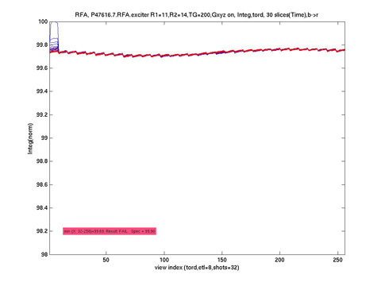
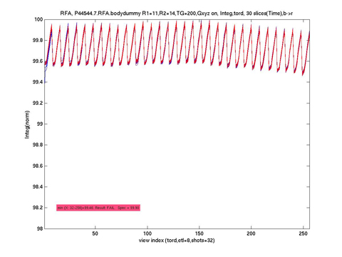
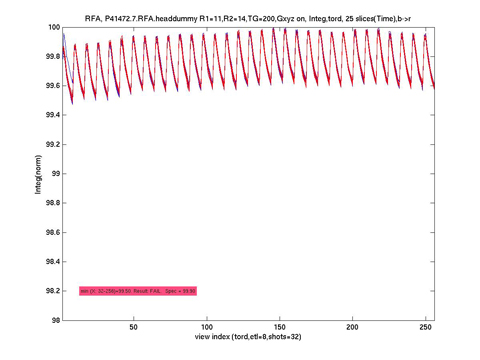

This is analogous to the earlier PkMag plot description, however this plot represents the RF Pulse INTEGRAL (or area) for each RF pulse acquired.
Illustration 17: Integ, or Integral (Exciter)

Illustration 18: Integ (Bodydummy)

Illustration 19: Integ (Headdummy)
